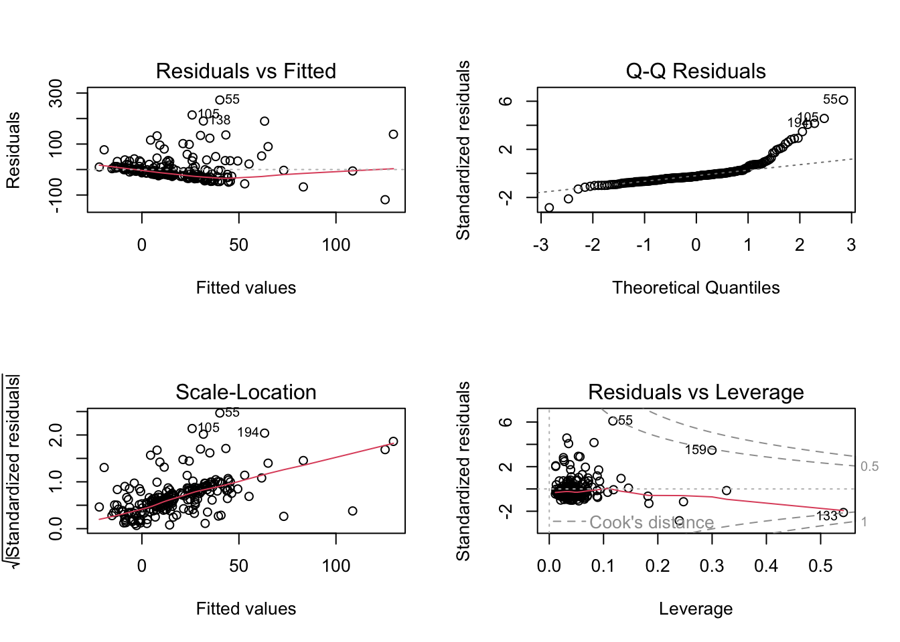
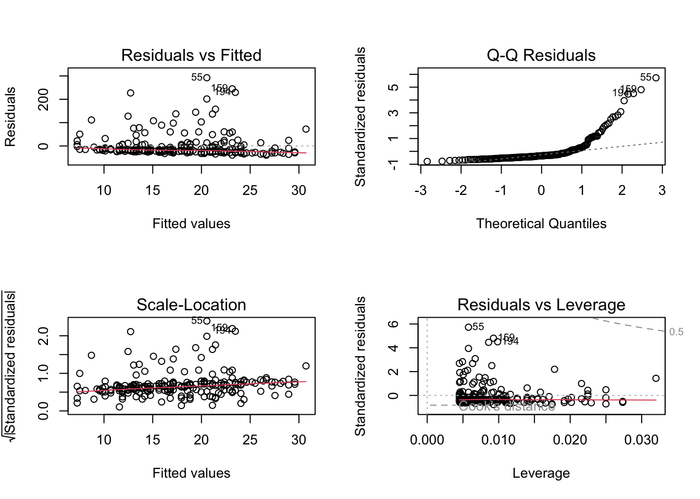
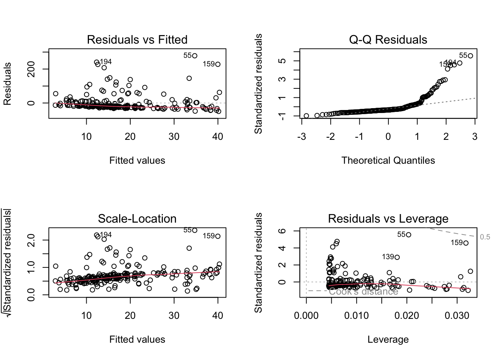
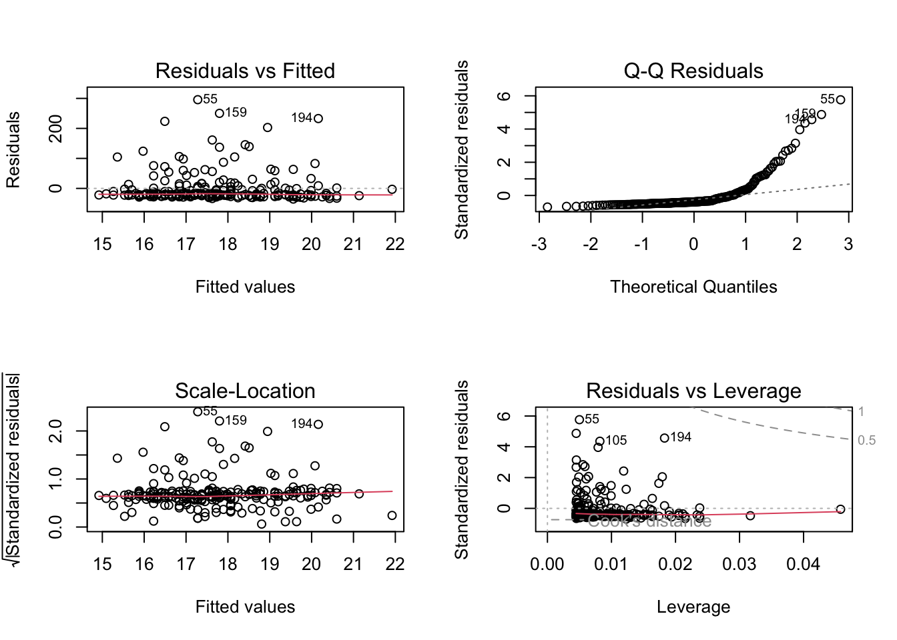
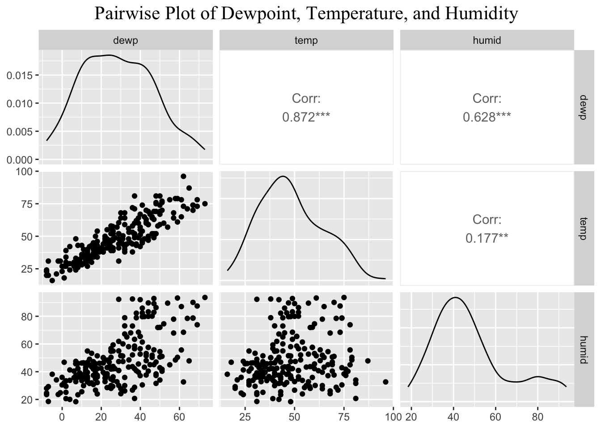

library( tidyverse )
library( nycflights13 )
library(GGally)
library(ggcorrplot)
library(corrplot)
library(dplyr)
#summary( flights)
#summary( weather )
flights %>%
filter( origin == "JFK", carrier == "EV") %>%
mutate( DateTime = paste(month,day,hour, sep=".")) %>%
select( DateTime,
`Departure Delay` = dep_delay,
`Departure Time` = sched_dep_time) %>%
droplevels() -> df.jfk
weather %>%
filter( origin == "JFK") %>%
mutate( DateTime = paste(month,day,hour, sep=".")) %>%
select( -origin, -year, -month, -day, -hour, -time_hour ) -> df.weather
merge( df.jfk, df.weather, by="DateTime" ) %>%
select( -DateTime ) -> df Preliminary Code
Activity
What features of this data set may impact the departure delay for flights coming out of JFK on ExpressJet Airlines?
The top three features that affect departure delay are dewpoint, humidity, and temperature. These features were selected because they resulted in the lowest Akaike Information Criterion (AIC) values in the AIC table, which indicates that they provide the best trade-off between model fit and complexity. In other words, these features explain the most variance in departure delay while minimizing overfitting, making them the most important predictors based on the AIC criterion.
# Function to plot residuals for a model
plot_residuals <- function(model) {
par(mfrow = c(2, 2))
plot(model)
par(mfrow = c(1, 1))
}
# Check for missing values and remove rows with missing data
df_clean <- df %>% drop_na()
# Initial regression with multiple predictors
model1 <- lm(`Departure Delay` ~
temp +
dewp +
humid +
wind_dir +
wind_speed +
wind_gust +
precip +
pressure +
visib +
`Departure Time`, data = df_clean)
# Summarize and plot residuals for model1
summary(model1)
Call:
lm(formula = `Departure Delay` ~ temp + dewp + humid + wind_dir +
wind_speed + wind_gust + precip + pressure + visib + `Departure Time`,
data = df_clean)
Residuals:
Min 1Q Median 3Q Max
-118.320 -23.376 -11.696 5.493 272.840
Coefficients:
Estimate Std. Error t value Pr(>|t|)
(Intercept) 1.455e+03 5.391e+02 2.699 0.007523 **
temp -3.544e+00 2.020e+00 -1.754 0.080837 .
dewp 3.550e+00 2.230e+00 1.592 0.112816
humid -1.983e+00 1.187e+00 -1.671 0.096223 .
wind_dir -1.562e-01 4.230e-02 -3.694 0.000281 ***
wind_speed -1.700e+00 1.516e+00 -1.122 0.263290
wind_gust 3.087e-01 1.292e+00 0.239 0.811388
precip -3.287e+02 7.856e+02 -0.418 0.676068
pressure -1.117e+00 4.966e-01 -2.250 0.025490 *
visib -1.106e+01 3.245e+00 -3.407 0.000785 ***
`Departure Time` 2.754e-02 7.884e-03 3.494 0.000580 ***
---
Signif. codes: 0 '***' 0.001 '**' 0.01 '*' 0.05 '.' 0.1 ' ' 1
Residual standard error: 47.64 on 212 degrees of freedom
Multiple R-squared: 0.1781, Adjusted R-squared: 0.1393
F-statistic: 4.593 on 10 and 212 DF, p-value: 6.508e-06plot_residuals(model1)
# Compare the AIC of the initial model
cat("AIC for model1:", AIC(model1), "\n")AIC for model1: 2368.753 # Perform stepwise selection based on AIC for model1
step_model1 <- step(model1, direction = "both")Start: AIC=1733.91
`Departure Delay` ~ temp + dewp + humid + wind_dir + wind_speed +
wind_gust + precip + pressure + visib + `Departure Time`
Df Sum of Sq RSS AIC
- wind_gust 1 129.6 481255 1732.0
- precip 1 397.3 481523 1732.1
- wind_speed 1 2855.1 483980 1733.2
<none> 481125 1733.9
- dewp 1 5753.8 486879 1734.6
- humid 1 6335.9 487461 1734.8
- temp 1 6983.8 488109 1735.1
- pressure 1 11486.9 492612 1737.2
- visib 1 26347.4 507473 1743.8
- `Departure Time` 1 27700.9 508826 1744.4
- wind_dir 1 30964.9 512090 1745.8
Step: AIC=1731.97
`Departure Delay` ~ temp + dewp + humid + wind_dir + wind_speed +
precip + pressure + visib + `Departure Time`
Df Sum of Sq RSS AIC
- precip 1 417.6 481672 1730.2
<none> 481255 1732.0
- dewp 1 5838.0 487093 1732.7
- humid 1 6489.7 487745 1733.0
- temp 1 7104.5 488359 1733.2
- wind_speed 1 8008.3 489263 1733.7
+ wind_gust 1 129.6 481125 1733.9
- pressure 1 12230.5 493485 1735.6
- visib 1 27184.4 508439 1742.2
- `Departure Time` 1 27705.1 508960 1742.5
- wind_dir 1 30843.8 512099 1743.8
Step: AIC=1730.16
`Departure Delay` ~ temp + dewp + humid + wind_dir + wind_speed +
pressure + visib + `Departure Time`
Df Sum of Sq RSS AIC
<none> 481672 1730.2
- dewp 1 6374.4 488047 1731.1
- humid 1 7171.7 488844 1731.5
- temp 1 7655.1 489328 1731.7
- wind_speed 1 7921.9 489594 1731.8
+ precip 1 417.6 481255 1732.0
+ wind_gust 1 149.8 481523 1732.1
- pressure 1 11985.2 493658 1733.6
- visib 1 27416.2 509089 1740.5
- `Departure Time` 1 27973.0 509646 1740.8
- wind_dir 1 30979.9 512652 1742.1summary(step_model1)
Call:
lm(formula = `Departure Delay` ~ temp + dewp + humid + wind_dir +
wind_speed + pressure + visib + `Departure Time`, data = df_clean)
Residuals:
Min 1Q Median 3Q Max
-113.518 -23.215 -11.534 5.312 267.409
Coefficients:
Estimate Std. Error t value Pr(>|t|)
(Intercept) 1.467e+03 5.260e+02 2.788 0.005778 **
temp -3.677e+00 1.994e+00 -1.844 0.066537 .
dewp 3.700e+00 2.199e+00 1.683 0.093859 .
humid -2.080e+00 1.165e+00 -1.785 0.075675 .
wind_dir -1.561e-01 4.207e-02 -3.710 0.000264 ***
wind_speed -1.376e+00 7.334e-01 -1.876 0.062009 .
pressure -1.123e+00 4.866e-01 -2.308 0.021979 *
visib -1.077e+01 3.087e+00 -3.490 0.000586 ***
`Departure Time` 2.766e-02 7.846e-03 3.525 0.000517 ***
---
Signif. codes: 0 '***' 0.001 '**' 0.01 '*' 0.05 '.' 0.1 ' ' 1
Residual standard error: 47.44 on 214 degrees of freedom
Multiple R-squared: 0.1772, Adjusted R-squared: 0.1464
F-statistic: 5.759 on 8 and 214 DF, p-value: 1.19e-06# List of models to compare (TOP AIC Values : temperature, dewpoint, humidity)
predictors <- c("dewp", "humid", "temp")
# Loop over predictors to build, summarize, and evaluate individual models
for (predictor in predictors) {
model <- lm(`Departure Delay` ~ get(predictor), data = df_clean)
# Summarize and plot residuals
cat("\nSummary for model with", predictor, ":\n")
summary(model)
plot_residuals(model)
# Compare the AIC of the model
cat("AIC for model with", predictor, ":", AIC(model), "\n")
# Perform stepwise selection for the individual model
step_model <- step(model, direction = "both")
summary(step_model)
}
Summary for model with dewp :
AIC for model with dewp : 2392.144
Start: AIC=1757.3
`Departure Delay` ~ get(predictor)
Df Sum of Sq RSS AIC
<none> 579252 1757.3
- get(predictor) 1 6120.8 585372 1757.6
Summary for model with humid :
AIC for model with humid : 2387.471
Start: AIC=1752.62
`Departure Delay` ~ get(predictor)
Df Sum of Sq RSS AIC
<none> 567239 1752.6
- get(predictor) 1 18133 585372 1757.6
Summary for model with temp :
AIC for model with temp : 2394.327
Start: AIC=1759.48
`Departure Delay` ~ get(predictor)
Df Sum of Sq RSS AIC
- get(predictor) 1 422.74 585372 1757.6
<none> 584950 1759.5
Step: AIC=1757.64
`Departure Delay` ~ 1
Df Sum of Sq RSS AIC
<none> 585372 1757.6
+ get(predictor) 1 422.74 584950 1759.5Graphics
df_subset <- df_clean %>% select(dewp, temp, humid)
ggpairs(df_subset) +
ggtitle("Pairwise Plot of Dewpoint, Temperature, and Humidity") +
theme(
plot.title = element_text(hjust = 0.5, family = "Times New Roman", size = 16)
)